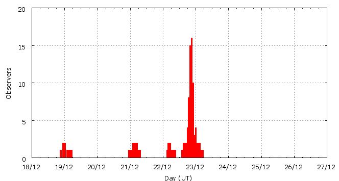

This page shows automated results of the Ursids 2007, based on visual data entered through the IMO electronic report form. Send your feedback regarding this page to Geert Barentsen or visit the project pages. Note that these automated results may not be suitable for scientific use!
Page generated on 29 March 2008 at 14:55 UT.
ZHRmax = 34 based on 179 Ursids in 148 data intervals, assuming fixed population index r = 2.5 and zenith correction 1/sin(hR).

| Time (UT) | Solarlon | nINT | nURS | ZHR | |
|---|---|---|---|---|---|
| 2007-12-19 01:47 | 266.655 | 6 | 7 | 3 | +-1 |
| 2007-12-21 03:15 | 268.752 | 16 | 18 | 6 | +-1 |
| 2007-12-22 09:50 | 270.050 | 5 | 17 | 12 | +-3 |
| 2007-12-22 18:33 | 270.419 | 18 | 24 | 20 | +-4 |
| 2007-12-22 20:19 | 270.495 | 25 | 33 | 30 | +-5 |
| 2007-12-22 21:16 | 270.534 | 33 | 50 | 34 | +-5 |
| 2007-12-22 22:09 | 270.572 | 20 | 22 | 23 | +-5 |
| 2007-12-23 00:38 | 270.678 | 25 | 8 | 6 | +-2 |
For each estimation interval: time is the middle of the interval, nINT is the number of observing periods and nURS is the number of Ursids involved. ZHR = (1 + sum nURS) / sum(Teff/C) where Teff is the effective observing time and C is the total correction for limiting magnitude, clouds and zenith correction. The solar longitudes refer to equinox J2000.0.
Data has been received from 21 observers in 11 countries. Thank you for your efforts!

| Observer | Country | Teff | nURS |
|---|---|---|---|
| Salvador Aguirre | Mexico | 10.20h | 8 |
| Karl Antier | France | 1.00h | 2 |
| Felix Bettonvil | Netherlands | 1.50h | 2 |
| Marcin Chwala | Poland | 1.50h | 3 |
| Sietse Dijkstra | Netherlands | 3.18h | 9 |
| Valentin Grigore | Romania | 4.64h | 10 |
| Vilem Heblik | Czech Republic | 1.50h | 2 |
| Carl Johannink | Netherlands | 5.42h | 7 |
| Jakub Koukal | Czech Republic | 4.00h | 13 |
| Jakub Koukal | Czech Republic | 6.00h | 16 |
| Peter Van Leuteren | Netherlands | 2.85h | 7 |
| Jiawei Ma | China | 0.44h | 7 |
| Koen Miskotte | Netherlands | 1.80h | 7 |
| Markku Nissinen | Finland | 3.10h | 20 |
| Tereza Novotna | Czech Republic | 1.00h | 2 |
| Krzysztof Polakowski | Poland | 5.00h | 16 |
| Alex Scholten | Netherlands | 2.00h | 6 |
| Tadeusz Sobczak | Poland | 2.15h | 6 |
| Izabela Spaleniak | Poland | 0.50h | 1 |
| Michel Vandeputte | Belgium | 9.00h | 27 |
| Lukasz Wozniak | Poland | 1.62h | 15 |
Create your own analysis!
Rate intervals: urs2007_rate.csv (CSV-format).
Magnitude distributions: urs2007_magn.csv (CSV-format).